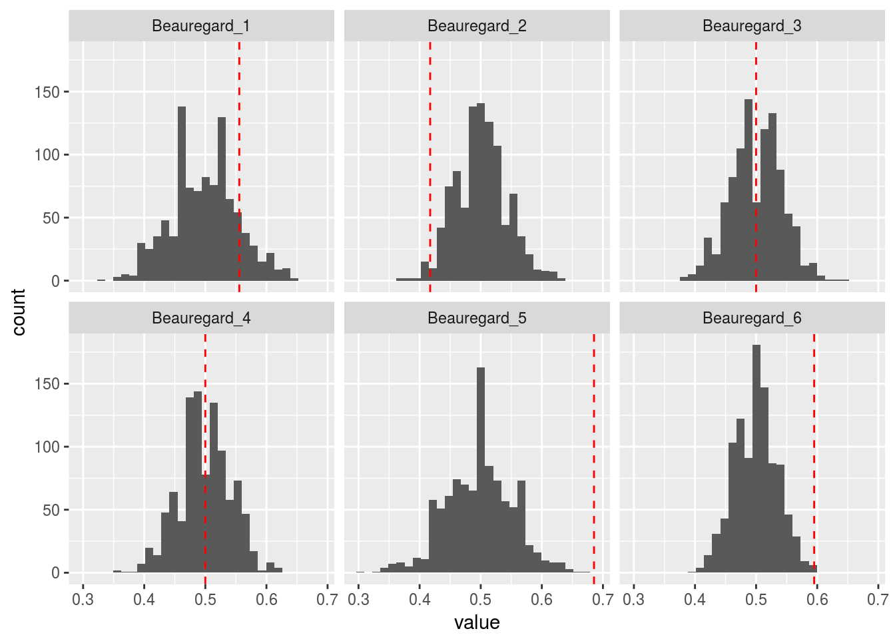
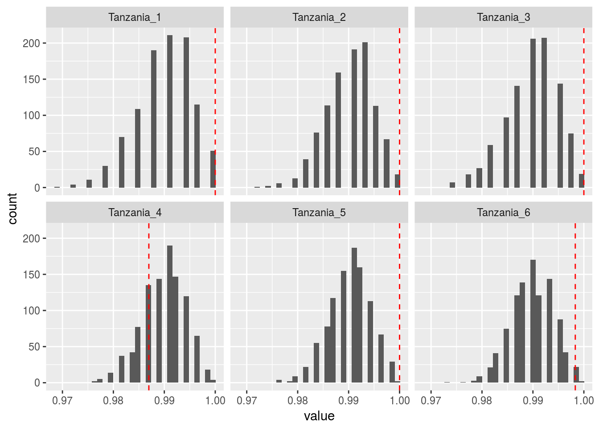

Last updated: 2016-11-21
Code version: 131c257aef9a0bdd91365390a2a51ccf7f3f60a4
I am going to check if modelling overdispersion is necessary.
library(updog)
library(ggplot2)
set.seed(3452)
load("../data/subset_David.Rdata")
dat <- subset_david
lastp <- 12 ## number of final rows that are parents
ploidy <- 6
index <- 10
cmat <- dat[[index]]
p1dat <- cmat[(nrow(cmat) - lastp + 1):(nrow(cmat) - lastp / 2), ]
p2dat <- cmat[(nrow(cmat) - lastp / 2 + 1):nrow(cmat), ]
odat <- cmat[1:(nrow(cmat) - lastp), ]
p1counts <- p1dat[, 1]
p1size <- rowSums(p1dat)
p2counts <- p2dat[, 1]
p2size <- rowSums(p2dat)
prior_vec <- rep(1/(ploidy + 1), ploidy + 1)
p1post <- bin_post(ncounts = p1counts, ssize = p1size, prior = prior_vec)
p2post <- bin_post(ncounts = p2counts, ssize = p2size, prior = prior_vec)The posteriors on the genotypes are very large
p1post[1] 0.000e+00 3.697e-115 1.768e-28 1.000e+00 2.139e-11 8.276e-76
[7] 0.000e+00p2post[1] 0.000e+00 0.000e+00 0.000e+00 0.000e+00 0.000e+00 2.121e-211
[7] 1.000e+00p1geno <- which.max(p1post) - 1
p2geno <- which.max(p2post) - 1Set up the possible probabilities
seq_error <- 0.01
pk <- seq(0, ploidy) / ploidy ## the possible probabilities
pk <- (1 - seq_error) * pk + seq_error * (1 - pk)
pk[1] 0.0100 0.1733 0.3367 0.5000 0.6633 0.8267 0.9900Parent 1 sims
itermax <- 1000
p1simsout <- sapply(p1size, stats::rbinom, n = itermax, prob = pk[p1geno + 1])
p1sims_prob <- sweep(x = p1simsout, MARGIN = 2, STATS = p1size, FUN = `/`)
longdat <- reshape2::melt(as.data.frame(p1sims_prob), id.vars = NULL)
smalldat <- data.frame(variable = names(p1counts), value = p1counts / p1size)
ggplot(data = longdat, mapping = aes(x = value)) +
facet_wrap(~variable) +
geom_histogram() +
geom_vline(data = smalldat, mapping = aes(xintercept = value), color = 2, lty = 2)`stat_bin()` using `bins = 30`. Pick better value with `binwidth`.
Parent 2 sims
itermax <- 1000
p2simsout <- sapply(p2size, stats::rbinom, n = itermax, prob = pk[p2geno + 1])
p2sims_prob <- sweep(x = p2simsout, MARGIN = 2, STATS = p2size, FUN = `/`)
longdat <- reshape2::melt(as.data.frame(p2sims_prob), id.vars = NULL)
smalldat <- data.frame(variable = names(p2counts), value = p2counts / p2size)
ggplot(data = longdat, mapping = aes(x = value)) +
facet_wrap(~variable) +
geom_histogram() +
geom_vline(data = smalldat, mapping = aes(xintercept = value), color = 2, lty = 2)`stat_bin()` using `bins = 30`. Pick better value with `binwidth`.
sessionInfo()R version 3.3.2 (2016-10-31)
Platform: x86_64-pc-linux-gnu (64-bit)
Running under: Ubuntu 14.04.5 LTS
locale:
[1] LC_CTYPE=en_US.UTF-8 LC_NUMERIC=C
[3] LC_TIME=en_US.UTF-8 LC_COLLATE=en_US.UTF-8
[5] LC_MONETARY=en_US.UTF-8 LC_MESSAGES=en_US.UTF-8
[7] LC_PAPER=en_US.UTF-8 LC_NAME=C
[9] LC_ADDRESS=C LC_TELEPHONE=C
[11] LC_MEASUREMENT=en_US.UTF-8 LC_IDENTIFICATION=C
attached base packages:
[1] stats graphics grDevices utils datasets methods base
other attached packages:
[1] ggplot2_2.2.0 updog_0.1.0 knitr_1.15
loaded via a namespace (and not attached):
[1] Rcpp_0.12.7 digest_0.6.10 assertthat_0.1 plyr_1.8.4
[5] grid_3.3.2 gtable_0.2.0 magrittr_1.5 evaluate_0.10
[9] scales_0.4.1 stringi_1.1.2 reshape2_1.4.2 lazyeval_0.2.0
[13] rmarkdown_1.1 labeling_0.3 tools_3.3.2 stringr_1.1.0
[17] munsell_0.4.3 yaml_2.1.14 colorspace_1.3-0 htmltools_0.3.5
[21] tibble_1.2